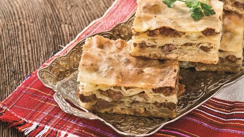
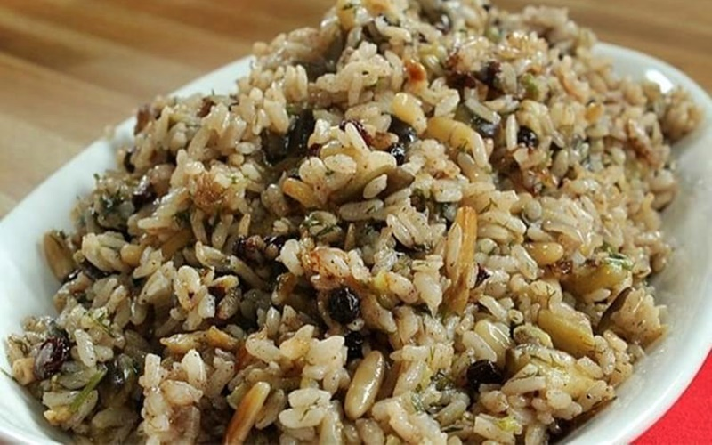

Osmaniye Mutfak Kültürü
Akdeniz'in Saklı Lezzeti

Osmaniye, Akdeniz Bölgesi'nin lezzetli mutfağıyla öne çıkan şehirlerinden biridir. Et yemekleri, baharat kullanımı ve yöresel tatlarla zenginleşmiş Osmaniye mutfağı, hem geleneksel hem de özgün lezzetler sunar.
Kebaplar, sulu yemekler ve özellikle yer fıstığıyla yapılan tarifler Osmaniye'nin gastronomi kültürünün temel taşlarını oluşturur. Ayrıca şehirde yapılan ev yapımı tatlılar da dikkat çeker.
- Et ve kebap ağırlıklı mutfak
- Zengin baharat kullanımı
- Yöresel ürünler ve fıstık
- Geleneksel tatlılar
Öne Çıkan Yemekler ve Mekan Önerileri

Kömbe
Özel baharatlarla yoğrulmuş hamurun arasına kıyma veya ceviz konularak hazırlanan Osmaniye’ye özgü bir bayram çöreği.
Nerede Yenir?
- 📠Kömbeci Zeynep
- 📠Osmaniye Yöresel Fırını
- 📠Lezzetli Tatlar Pastanesi

Fıstıklı Pilav
Osmaniye'nin meşhur yer fıstığı ile hazırlanan özel pilav türü.
Nerede Yenir?
- 📠Yöresel Sofra
- 📠Fıstık Evi
- 📠Lezzetli Tabaklar

Zerde Tatlısı
Safran, gül suyu ve pirinçle hazırlanan, Osmaniye'ye özgü geleneksel tatlı.
Nerede Yenir?
- 📠Osmaniye Tatlıcısı
- 📠Tatlıcı Nihat Usta
- 📠Zerdeci Dede